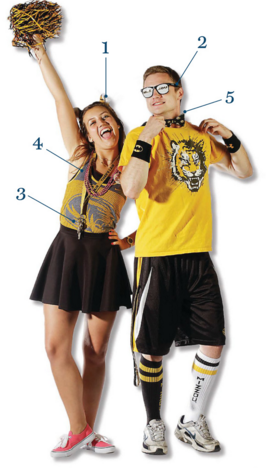
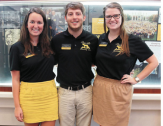
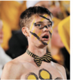
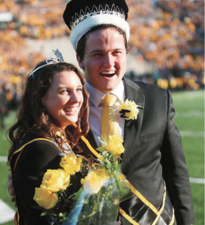

The evolution of Truman, from the Civil War to Homecoming 2015
The many faces of the mascot Missouri fans have come to love

Game Day Must Haves
Tiger’s lair spirit chairs Rachel Sirany and Jared Burge share their enthusiasm for the black gold and (this year) pink
Q&A with Sheryl Crow
Sheryl Crow, a nine-time Grammy winner who has sold more than 35 million albums around the world, graduated from MU in 1984. She talked to Alex Jacobi for the Columbia Missourian on Sept. 30. Her most recent album is “Feels Like Home.”

Homecoming Tri- Directors Q&A
The homecoming tri-directors oversee the 31 MU students on the Steering Committee who make sure everything is in order when the big weekend arrives. Here are conversation with that year’s three leaders — Tanner Bryant, Kelsey Denkens and Kit Nelson.

Is the north end zone of Faurot Field cursed?
Four incidents indicate it has been nothing but trouble for Missouri.

A Q&A with last year's king and queen, Ethan Colbert and Allison Schnitker
The reign of last year’s Homecoming king, Ethan Colbert, and queen, Allision Schnitker, comes to an end this week.
 Missourian Homecoming Guide
Missourian Homecoming Guide